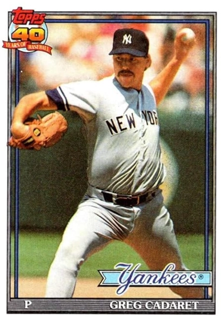
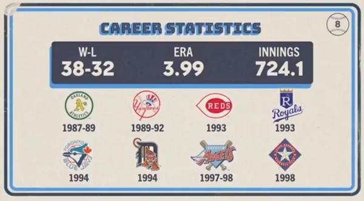

Greg Cadaret "The Caddy"
Career Highlights & Facts
(Facts are AI-generated and may require verification)
- Was traded to the New York Yankees as part of the package for Rickey Henderson in 1989.
- Pitched 10 scoreless innings across four postseason series in 1988 and 1989.
- Pitched for eight different major league teams during a ten-year career.
Career Totals
| WAR | W | L | ERA | G | GS | SV | IP | SO | WHIP |
|---|---|---|---|---|---|---|---|---|---|
| 6.6 | 38 | 32 | 3.99 | 451 | 35 | 14 | 724.1 | 539 | 1.545 |
Statistics via Baseball-Reference.com
The Original Clue
